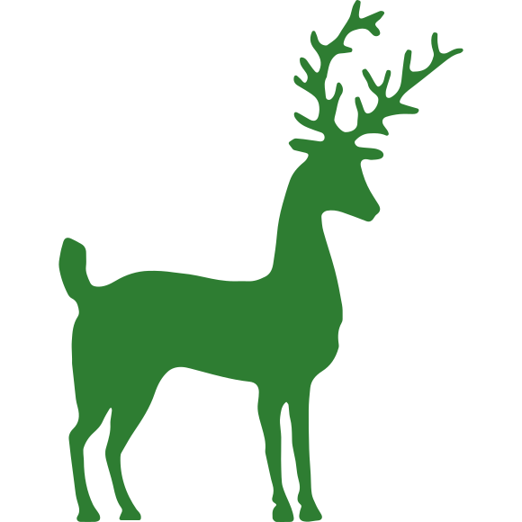
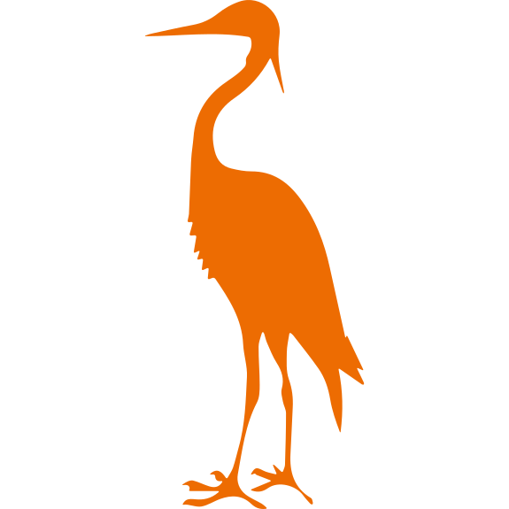
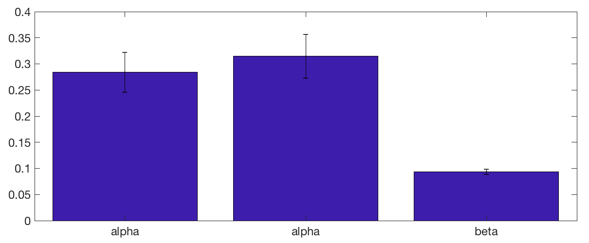
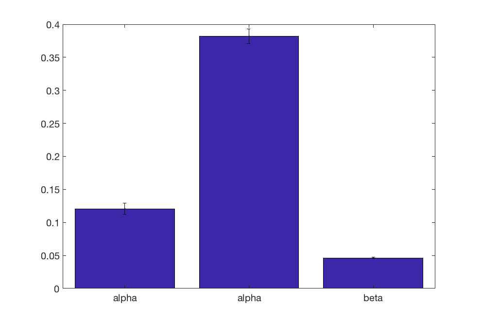

Advanced Lab · Session 2 of 4
Organisers: Dr Jan Grohn · Dr Miriam Klein-Flügge
Department of Experimental Psychology, University of Oxford
Week 1
Week 2 today
Week 3
Week 4
How do we learn across time which stimulus is more likely to be rewarded?
How do we decide between different options?
Behrens et al., Nature Neuroscience, 2007
How do we learn, over time, which choices are more rewarding?
Condition 1 — stable
Condition 2 — volatile
How do we decide between different options?
Behrens et al., Nature Neuroscience, 2007
On each trial the model compares what happened with what it expected, and moves its expectation a fraction of the way towards the outcome:
$o_t = 1$ if option 1 (green) was rewarded and $0$ if option 2 (orange) was; $\alpha$ is the learning rate, with $0 < \alpha \le 1$.
Option 2 is rewarded whenever option 1 is not, so its probability is $1 - p_t$: the model only needs to track one probability.
By comparing the speed of learning ($\alpha$) in the volatile and the stable phase, we can test our first hypothesis: how fast we learn and adjust our behaviour depends on how quickly the environment is changing.
The model tracks a probability. The task also shows points. Something has to put them together into a single number that choices can be based on.
or, less optimally, a weighted sum
A utility for each option is still not a choice. The model needs a decision rule that turns the difference between the two utilities into the probability of picking one of them.
That probability is what we will later compare against what a participant actually did, which is how the model gets fitted at all.
If $u_1 > u_2$, always choose option 1.
If $u_1 < u_2$, always choose option 2.
The step sits at the indifference point, $u_1 = u_2$, where the two options are worth exactly the same and the rule has nothing to go on.
If $u_1 > u_2$, choose option 1 with a higher probability — the bigger the difference, the higher. A logistic function gives this S-shape:
Complete the Colab notebook up to the beginning of Section 2, “Creating simulations from the model”.
You will write the softmax yourself, and see what changing $\beta$ does to the model's choices.
$\beta$ is the inverse temperature. The higher it is, the steeper the curve, and the less often the model takes the worse option.
The name is an allusion to thermodynamics: a high temperature, meaning a low $\beta$, means particles moving at random, so behaviour is noisier.

37
63Task
Participants
choice m₁ m₂ 0 20 40 0 10 60 1 40 20 0 10 80 1 40 10 0 10 40 1 60 10 ⋮
Data
Computational model
Model parameters, e.g.
learning rate $\alpha$
Palminteri et al., TiCS, 2017 · Scholl & Klein-Flügge, Behavioural Brain Research, 2018 · Lockwood & Klein-Flügge, SCAN, 2020
Task
Participants
Computational modelparameters set to the expected range of real data
choice m₁ m₂ 0 20 40 0 10 60 1 40 20 0 10 80 1 40 10 0 10 40 1 60 10 ⋮
Data
Computational model
Model parameters, e.g.
learning rate $\alpha$
Key advantage of simulating data: we know the ground truth, e.g. the true $\alpha$.
Palminteri et al., TiCS, 2017 · Scholl & Klein-Flügge, Behavioural Brain Research, 2018 · Lockwood & Klein-Flügge, SCAN, 2020
Palminteri et al., TiCS, 2017 · Scholl & Klein-Flügge, Behavioural Brain Research, 2018 · Lockwood & Klein-Flügge, SCAN, 2020
Session 1
Reinforcement learner
$\delta_t = o_t - p_t$free parameter $\alpha$
Session 2
Utility
$u = m \times p$for each option
Session 2
Softmax
$P(c_1) = \frac{1}{1 + e^{-\beta(u_1 - u_2)}}$free parameter $\beta$
Later
Two learning rates, $\alpha_s$ and $\alpha_v$Simulated choices loop back to stand in for real data: the same model can generate a participant's choices or be fitted to them.
Simulated with one learning rate
Simulated with two
Palminteri et al., TiCS, 2017 · Scholl & Klein-Flügge, Behavioural Brain Research, 2018 · Lockwood & Klein-Flügge, SCAN, 2020
Either way you find out before collecting a single participant, which is the whole point of doing it first.
Palminteri et al., TiCS, 2017 · Scholl & Klein-Flügge, Behavioural Brain Research, 2018 · Lockwood & Klein-Flügge, SCAN, 2020
Simulate every participant with a single $\alpha$ across both blocks, then fit the two-learning-rate model to the result.
If the fitting invents a difference that was never there, a difference in the real data would mean nothing.

Now simulate with two learning rates, $\alpha_S$ in the stable block and $\alpha_V$ in the volatile one, and fit the same model.
If the difference does not come back out, the task cannot measure the thing the whole study is about.

To simulate a choice, compare the choice probability with a random number between 0 and 1: option 1 if the number is lower, option 2 if not. Over many trials the model then chooses option 1 exactly as often as its choice probability says.
Complete the remaining exercises in the Colab notebook.
You will run both simulations and see whether the task can tell them apart.
A good fit assigns a high choice probability to the choices the participant actually made.
So for a given $\alpha$ and $\beta$ we can compute, trial by trial, how likely the model thought the observed choice was — and multiply those together across trials.
Taking logs turns the product into a sum, which stays representable. Fitting maximises this, or equivalently minimises its negative, the error.
One learning rate
Two learning rates, one per block
Start somewhere, work out which way is uphill, take a step, repeat. This is what the notebook's fitting routine does — from ten starting points, keeping whichever run ends highest.
This is for a model with one learning rate, but the same works for a model with two.
Different learning rates simulated
The same learning rate simulated
Together these say the task can find the effect when it is there, and does not invent it when it is not.
Instead of fitting $\alpha$ and $\beta$, regress each choice on the last five outcomes and let every lag have a weight of its own. The weights come out where the learning model says they should be.